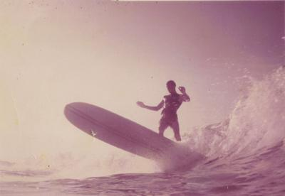

The first link goes Home . The second link is Research . The third link is Services . The fourth link is Collections . The fifth link is About . The sixth and last link is Ask a Librarian!

Mike Curry
by Joseph "Skipper" Funderburg
by Joseph "Skipper" Funderburg
Michael Thomas “Mike” Curry (August 28, 1949 – March 11, 2010) was born in Fayetteville, North Carolina on Fort Bragg, U.S. Military Base. Mike’s father was active in the U.S. military, his mother and two brothers deployed to states and nations around the globe. About the time Mike’s father was retiring from the military, they chose Wilmington and Wrightsville Beach to raise their boys. Mike attended New Hanover County schools, including Sunset Elementary School, Roland Grise Middle School and John T. Hoggard High School.
Mike was one of the first surfers in North Carolina and instrumental in shaping our local surfing community into what it is today. He was one of the first and hottest goofy footed surfers in North and South Carolina, winning and placing in numerous early contests. He was a Wrightsville Original and amongst the earliest group of locals on Wrightsville Beach. He surfed with a silky smooth style, riding with elegance and was a nose riding specialist.

Mike Curry. Courtesy: Bill Curry
Reflecting on the period and his brother, Bill noted, "A good friend came across this picture [above] of my brother Mike surfing in the 60's, as I recall he was riding a Surfboards Hawaii "nose rider model." When I saw the picture several thoughts poured through my mind. How great it was to grow up surfing here on the east coast. It was like a frontier back then, always discovering new ideas about boards and and creating your own distinctive style (although that's how the 60's were whether you surfed or just a hippie ). The picture really capture [sic] the style that mike [sic] had when he was surfing, I will always remember that."
Out of the water, Mike was a professional singer, with an amazing tenor voice. He was known for his powerful performances, great pitch and astronomical range. When he sang, one could almost feel the crowd shiver. While he mastered lead guitar and drums, in his mind and heart, he was always a blues singer. He wrote original songs and music, elevating and polishing the sound of all the bands he played in. He was a member of several well known local southern rock and blues bands, such as Fever and Fail Safe. He participated in innumerable jam sessions – he loved to sing and entertain. On the national scene, he was a lead vocalist in the Travis Moon Band, which featured three guitarist-singers and a super solid rhythm section. The Travis Moon Band often opened for Steppenwolf, Rainbow, Ted Nugent, Johnny Rodriguez, The Nitty Gritty Dirt Band and the Association. He was also a member of the Cape Fear Blues Society.
Mike was also a prosthetic technician, creating ultra-weight appliances and limbs for orthopedic companies. He was married twice and had one son.
References
Curry, Bill. Brother Mike. LocalSol, 2 Dec. 2010. Web. 17 Dec. 2010 <http://localsol.blogspot.com/2010/12/brother-mike.html>.
Kennedy-Stewart, Lori. "Surfer, Musician Showed off His Talents." Star-News [Wilmington, NC] 25 Apr. 2010: B1. Print.
Page created and maintained by:Peter Fritzler, Randall Library, University of North Carolina Wilmington
First online: December 17, 2010
Last update: December 20, 2010
Citing This Page:
Funderburg, Joseph "Skipper." "Mike Curry." Cape Fear Surfing Archive. William Randall Library, University of North Carolina Wilmington. [Created: December 17, 2010; Updated: December 20, 2010; Cited]. Available from http://library.uncw.edu/surf.